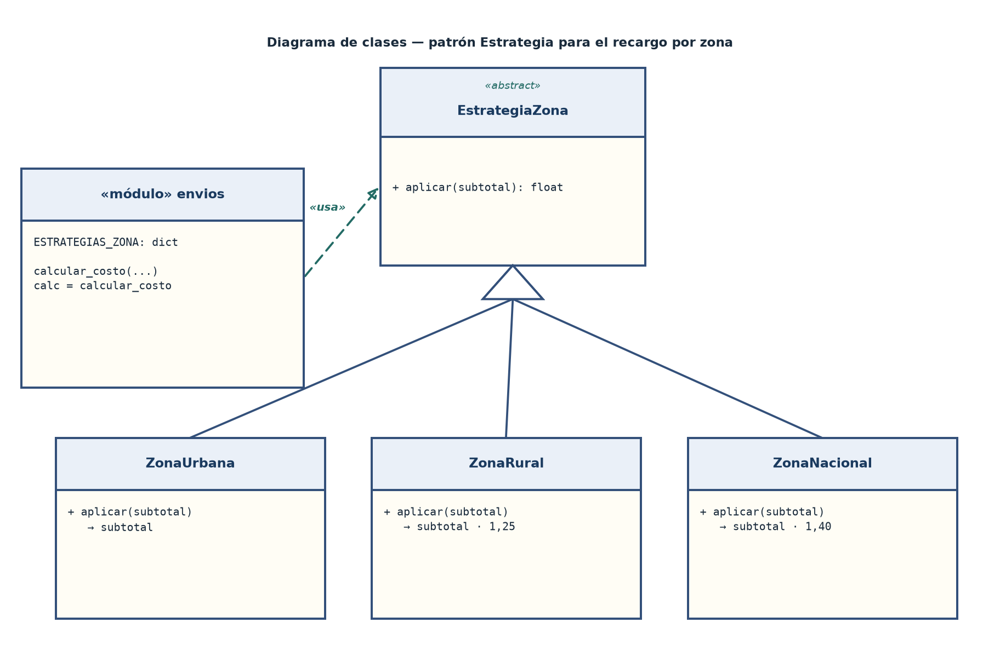

Figura 6.2 — Regresión completa en verde: 40/40 pruebas pasan (32 de la suite original + 8 de la Parte 8) y la cobertura queda en 100 % de sentencias y ramas.
| # | Mal olor (nombre técnico) | Línea v1.0.0 | Deuda técnica que genera |
|---|---|---|---|
| 1 | Número mágico (magic number) — PMAX = 50 quemado en la condición del peso | 37 | El valor de negocio máximo vive en la lógica, no en CONFIG: si la empresa cambia PMAX hay que editar la condición y se puede dejar desactualizada la doc; además nadie sabe qué significa «50» sin leer contexto. |
| 2 | Números mágicos de negocio — tarifas 6000 / 9000 / 800 y porcentajes (0.05, 0.10) | 39–44, 54–60 | Remarketing de tarifas imposible sin tocar la función; cualquier ajuste comercial rompe la confianza de las pruebas; los cambios se hacen por «prueba y error» en producción. |
| 3 | Flag argument (parámetro booleano flag con significado oculto) | 36, 63–64 | La función hace dos cosas (calcular y avisar); el booleano no se autodocumenta (¿flag qué?); quien la llama debe saber un secreto interno; dificulta probar «sin imprimir». |
| 4 | Variables de una letra (p, z, c, d, t) | 36–65 | Lectura críptica; cualquier mantenedor reconstruye el significado con un mapa mental; sube el costo de cada cambio posterior. |
| 5 | Código muerto / no-op (t = t en rama de zona urbana) | 46 | Ruido puro; hace dudar si falta un recargo o un comportamiento; rompe la lectura lineal «si → efecto». |
| 6 | Comparación con None con != (en vez de is not) | 58 | Frágil ante cualquier objeto con __eq__ rara y contradice la semántica de identidad de Python; invita a bugs sutiles al crecer el modelo. |
| 7 | Método largo / complejidad ciclomática 15 (calc monolítico) | 36–65 | Cada corrección obliga a entender 15 decisiones a la vez; el riesgo de regresión en cada toque es altísimo; revisión entre pares casi imposible. |
| 8 | Redondeo truncado como «regla oculta» (int(t / 100) * 100) | 65 | Una decisión de negocio (cómo redondear) escondida en una expresión; nadie la ve al leer «costo»; reproduce DEF-06. |
| 9 | Efectos secundarios I/O en cálculo (print dentro de la función) | 63–64 | Mezcla capas: el módulo no puede reusarse (API, batch, pruebas) sin ruido en consola o efectos parásitos; rompe la regla de una sola responsabilidad. |
| Tipo | Rama / cambio | Por qué |
|---|---|---|
| Correctivo | fix/DEF-01…fix/DEF-06 | Corrigen defectos que el software cometía frente a su propia especificación; no agregan funcionalidad ni adaptan a nada: devuelven al sistema a su comportamiento exigido (R1–R8). |
| Perfectivo | refactor/estrategia (sin cambiar la especificación ni el comportamiento exigido) | Extraer funciones, constantes con nombre, patrón Estrategia, eliminar flag: misma salida para las mismas entradas válidas; mejora legibilidad, pruebas y economía de cambio sin añadir requisitos. |
| Preventivo | test/suite, validación de entradas (DEF-05 como defensa), cobertura 100 % | Disminuyen la probabilidad de fallas futuras: una entrada imposible queda rechazada en la frontera antes de causar cálculos erróneos; la suite detecta cualquier ruptura en segundos. |
| Adaptativo | feat/cliente-empresarial (Parte 8) | Adecúa el sistema a un negocio que cambió: un nuevo segmento de clientes (empresarial, 12 %) con una condición nueva (sin recargo de zona sobre L2). Es funcionalidad nueva motivada por el negocio, no una corrección. |
Cuatro compromisos concretos, en este orden:
validar_peso / validar_zona / validar_dia / validar_cupon, tarifa_por_peso, aplicar_recargo_zona, aplicar_descuentos, aplicar_fin_de_semana, redondear_100 y el orquestador calcular_costo.TARIFA_TRAMO_1 = 6000, TARIFA_TRAMO_2 = 9000, RECARGO_KG_EXTRA = 800, COSTO_MINIMO = 5000, DESC_FRECUENTE = 0.05, DESC_CUPON = 0.10, CUPON_VALIDO = "ENVIO10", y PMAX entró a CONFIG["PMAX"] = 50. Quien lee el código ya no traduce números.flag: el contrato queda calcular_costo(peso, zona, cliente, dia, cupon=None); calc sobrevive como alias de compatibilidad sin flag, y la línea de print desapareció. Esto rompe la firma: por eso la versión pasa de 1.x a 2.0.0.EstrategiaZona (abstracta) con ZonaUrbana (sin recargo), ZonaRural (×1,25) y ZonaNacional (×1,40), elegidas por un registro ESTRATEGIAS_ZONA. Agregar la próxima zona ya no toca ningún elif: se agrega una clase y una entrada al registro. Diagrama de clases:
Los seis defectos de la Parte 5 se corrigieron en su propia rama fix/DEF-XX, fusionada a main con --no-ff en este orden: DEF-01 (borde tramo 1) → DEF-02 (sábado) → DEF-03 (orden finde) → DEF-04 (cupón inexistente) → DEF-05 (validación zona/día) → DEF-06 (redondeo). Cada corrección dejó la suite algo más verde: al integrar DEF-06 ya pasaban 32/32. Ningún defecto quedó abierto ni «aceptado como limitación».
Después de las correcciones y del refactor ejecuté la misma suite completa; el resultado:
Estrictamente como regresión del heredado, el umbral se verificó en v2.0.0 con 32/32 verdes y cobertura 100 % (ver tabla 5.1); la corrida de la figura incluye además las 8 pruebas de la solicitud de cambio de la Parte 8.
| Métrica | v1.0.0 (heredado) | v2.1.0 | Lectura |
|---|---|---|---|
Complejidad ciclomática de la función principal (calc/calcular_costo) | 15 | 2 | El orquestador quedó plano; la decisión interna con más ramas es aplicar_descuentos (V=5, antes parte del 15). Por función: ninguna supera V=5. |
| Líneas de código | 65 físicas (29 sentencias) | 157 físicas (75 sentencias) | Crece por validación explícita, clases de estrategia y el alias de compatibilidad — cambio deliberado y barato de leer, no duplicación. |
| Cobertura de sentencias | 96 % | 100 % | Sin sentencias muertas; el print se eliminó con flag. |
| Cobertura de ramas | 96 % (1 rama parcial) | 100 % | Ninguna rama sin probar. |
| Parámetros de la función | 5 + flag oculta | 5 (sin flag) | Contrato explícito: peso, zona, cliente, día, cupón. |
| Robustez ante entradas inválidas | Solo peso | Peso, zona, día, cupón | Toda entrada imposible lanza ValueError (R1, R2, R7). |